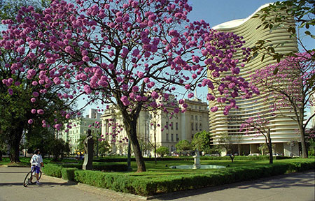
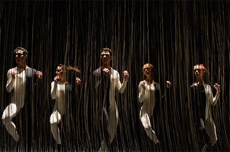

Belo Horizonte
Climate Conditions in November
Mean Temperature High: 27°C Mean Temperature Low: 17°C During this time of the year there is an elevated chance of sporadic rain showers. Source: climate-data.org
For more information on Belo Horizonte’s public transit system, please visit http://www.bhtrans.pbh.gov.br
Tourist Information
For information related to Sightseeing, Dinning, Cultural, Leisure, and Shopping activities, please visit the following websites: www.belohorizonte.mg.gov.br or http://www.tripadvisor.com/Restaurants-g303374-Belo_Horizonte_State_of_Minas_Gerais.html
Attractions in Belo Horizonte
Liberty Square Cultural Circuit: circuitoculturalliberdade.com.br

Located in central Belo Horizonte, the Liberty Square Cultural Circuit is Brazil’s largest complex dedicated to cultural education. The eleven museums and institutions comprising the cultural circuit, which are located on or near Liberty square, include: Arquivo Público Mineiro, Biblioteca Pública Estadual Luiz de Bessa, Centro de Arte Popular Cemig, Centro Cultural Banco do Brasil, Espaço do Conhecimento UFMG, Horizonte Sebrae – Casa da Economia Criativa, Cefar Liberdade, Memorial Minas Gerais Vale, Museu das Minas e do Metal, Museu Mineiro and Palácio da Liberdade.(map)
{kind=link}

Attractions
Pampulha Architectural Complex: http://pt.wikipedia.org/wiki/Pampulha

Constructed in the 1940s and designed by renowned architect Oscar Niemeyer, the Pampulha Architectural Complex features many of Belo Horizonte’s celebrated landmarks and serves as a benchmark for Brazil’s modern architectural movement. Sites to see around Pampulha’s lake include São Francisco de Assis Church; the Pampulha Art Museum; The Center for Urbanism, Architecture, and Design at Casa do Baile; Kubitschek (JK) House and Museum; Belo Horizonte Zoo and Botanical Gardens; as well as the Minerinho Arena and Mineirão Stadium.

Attractions
Grupo Corpo

Grupo Corpo is a Brazilian contemporary dance theater company known for its distinct style and choreography which often challenges the audience’s perceptions of ballet and modern dance. Founded in 1975 and based out of Belo Horizonte, MG, Grupo Corpo has gained international fame for its Brazilian influenced yet distinctly unique dance style. For more information, please visit: http://www.grupocorpo.com.br/
Giramundo: http://www.teatrodebonecos.org/2011/

The Museu Giramundo hosts the largest puppet theater collection in the Americas and presents the history of Giramundo, Brazil’s most important and internationally renowned puppet theater group. Furthermore, parts of the museum’s collection, which includes 400 dolls and puppets, is displayed in “live” performance and presents many of Giramundo’s original theatrical plays. The museum’s collection also includes an exhibition on the technical drawings and designs by Álvaro Apocalypse, famed puppeteer and one of Giramundo’s founders.